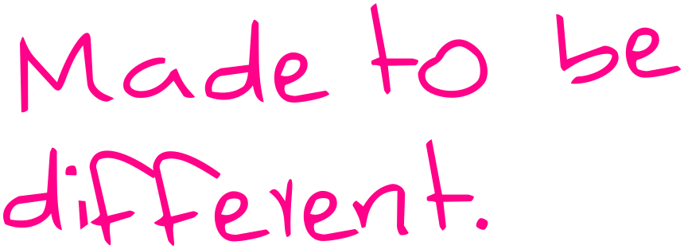
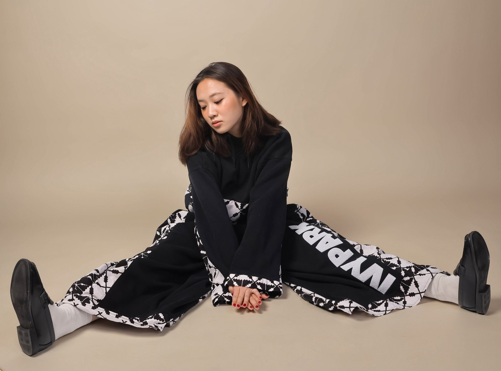

At TUNZA, we believe that fashion deserves a second chance. What others see as waste, we see as an opportunity to create something extraordinary. Inspired by the growing problem of textile waste in Kenya, we are rethinking the way fashion is created, transforming discarded clothing into bold, unique, one-of-a-kind pieces.
Our journey begins with forgotten garments and fabrics that would otherwise be left behind. Instead of letting these materials go to waste, we give them a new purpose. Through upcycling, creativity and local craftsmanship, discarded textiles are carefully reworked into new designs that combine expressive silhouettes, distinctive patterns and individuality.
But TUNZA is about more than just clothing. We believe fashion has the power to create opportunities, connect people and make a positive impact. By involving local communities in the creative process, we aim to support craftsmanship, encourage new possibilities and show that meaningful change can begin with something as simple as a piece of fabric.
Every TUNZA creation carries a story. A story of transformation, creativity and new beginnings. No two pieces are exactly alike, because we believe individuality is what makes fashion truly special.
Our mission is to challenge the idea that something loses its value simply because it has been used before. We want to inspire a different way of thinking about fashion, where creativity replaces waste and personal expression goes hand in hand with conscious choices.
Because at TUNZA, fashion isn’t about fitting in. It’s about standing out, embracing individuality and making a difference.